Drugs Used in Gynecology
- Everything follows from two facts about the HPO axis: GnRH, LH and FSH are pulsatile, and sex hormone levels follow a temporal pattern. Give continuous, supraphysiologic hormone and you wreck the pattern — that's contraception.
- Drugs here do one of three things: disrupt the HPO axis (contraception), oppose overgrowth of hormone-dependent tissue (breast, endometrial, prostate cancer), or replace what's missing (menopause, hypogonadism).
- The progestin does the contracepting; the estrogen controls the bleeding. Which progestin matters: estranes and gonanes are androgenic (acne, hair), drospirenone is anti-androgenic but has mineralocorticoid activity (K+ retention).
- SERMs and SPRMs are agonist, partial agonist or antagonist depending on the tissue, because each tissue has different receptor isoforms and different co-factors. Tamoxifen: antagonist in breast, partial agonist in endometrium (so, endometrial cancer risk). Raloxifene: antagonist in both, agonist in bone. Clomiphene blocks the hypothalamus, which releases FSH/LH and induces ovulation.
- For periods: NSAIDs block prostaglandins (pain and less bleeding); tranexamic acid is an antifibrinolytic that stops clots being dissolved — more effective for blood loss, but contraindicated with a history of thrombosis.
Learning Objectives
- Describe the pharmacological principles underlying the clinical uses of estrogens, progestins and androgens.
- Describe the basic components of combined contraceptive products and their routes of delivery.
- Compare combined products with emergency contraception, progestin-only and long-acting progestin contraception.
- Identify the benefits, risks, side effects and contraindications of contraceptive preparations.
- Explain how selective estrogen and progesterone receptor modulators are used in breast cancer and endometriosis.
- Describe the pharmacological uses of androgen agonists and antagonists.
- Explain how NSAIDs and tranexamic acid are used to treat menstrual symptoms.
Dr. Fabiana Caetano Crowley's module, deliberately the pharmacology counterpart to Dr. Black's clinical lecture (4.3) — expect overlap, and use it to consolidate. The module also assigns a review article on hormone replacement therapy: Lobo RA, "Hormone-replacement therapy: current thinking", Nat Rev Endocrinol 2017;13:220–31.
The Principles
Two concepts, three therapeutic strategies. Everything else is detail.
Why the Axis Is Druggable
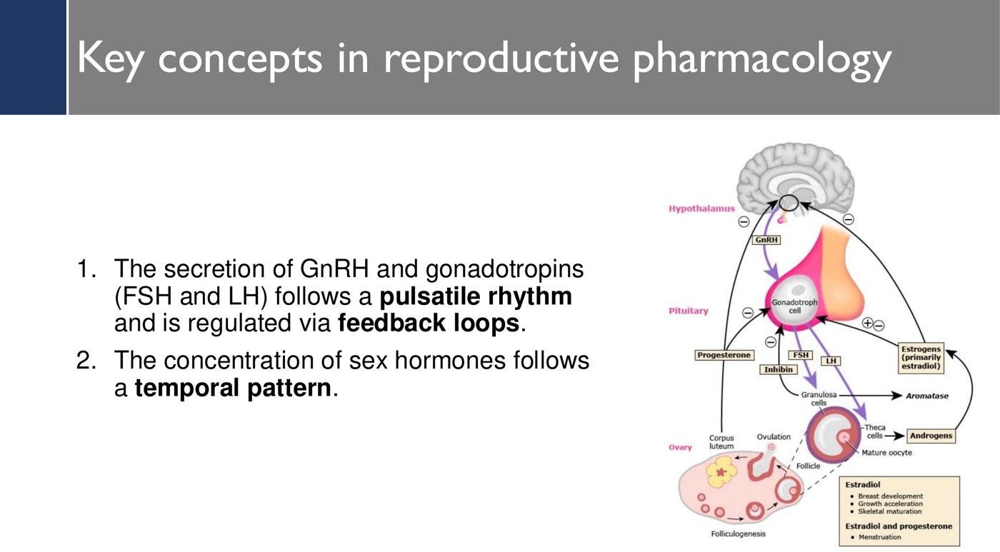
Two concepts. Pulsatility and a temporal pattern. Disrupt either and ovulation fails — which is a disease when it happens by accident and a drug when you do it on purpose.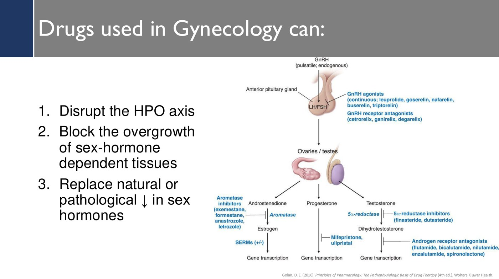
Three strategies, one map. Note where each drug class acts: GnRH agonists/antagonists at the pituitary, aromatase inhibitors on androgen→estrogen conversion, 5α-reductase inhibitors on testosterone→DHT, and receptor antagonists at the target tissue.| Strategy | Used for |
|---|---|
| Disrupt the HPO axis | Preventing pregnancy |
| Oppose overgrowth of hormone-dependent tissue | Breast, endometrial, prostate and other reproductive cancers |
| Replace low hormone levels | Menopause, hypogonadism, ovarian dysgenesis |
Physiology First: Estrogen and Progesterone
![Slide titled Physiological actions of estrogens in females with a body diagram showing effects on mood, neuroprotection, reduction of intraocular pressure, arterial vasodilation, cardioprotection, increased production of liver proteins such as coagulation factors and hepatic lipoprotein receptors, maintenance of bone density, amelioration of skin aging, growth and differentiation of breast tissue and sex organs, and increased risk of endometrial cancer. Text: too much causes overgrowth of estrogen-dependent tissues and infertility; too little causes hypogonadism, symptoms of menopause and osteoporosis.](../../../../assets/images/week-4/gynecology-drugs/estrogen-physiology.jpg) Estrogen does far more than reproduction: bone density, HDL over LDL, vasodilation, coagulation factor synthesis (and fibrinolysis), angiotensinogen, neuroprotection. Every one of those reappears later as a side effect.
Estrogen does far more than reproduction: bone density, HDL over LDL, vasodilation, coagulation factor synthesis (and fibrinolysis), angiotensinogen, neuroprotection. Every one of those reappears later as a side effect.
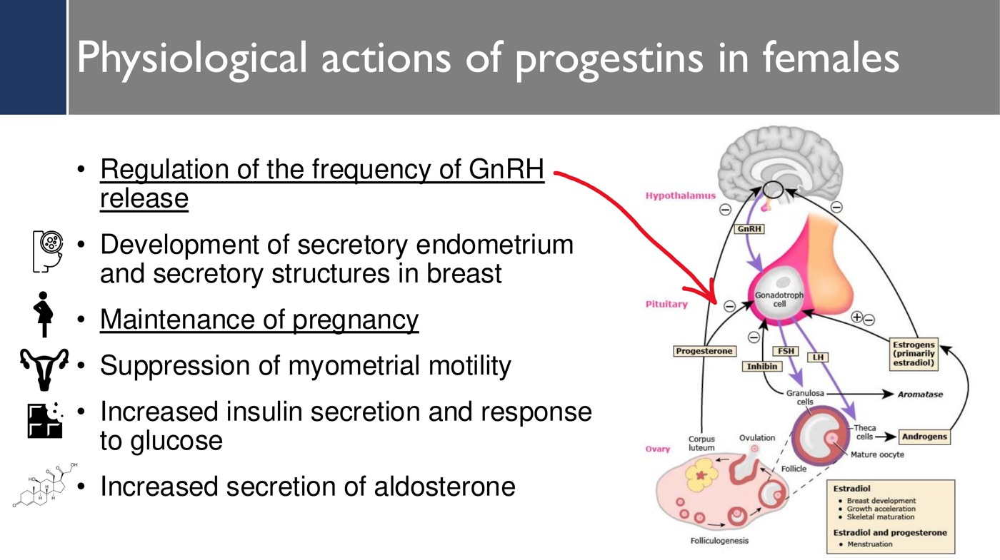
Progesterone slows GnRH frequency, builds secretory endometrium, maintains pregnancy, quiets the myometrium — and affects glucose and aldosterone, which is where several progestin side effects come from.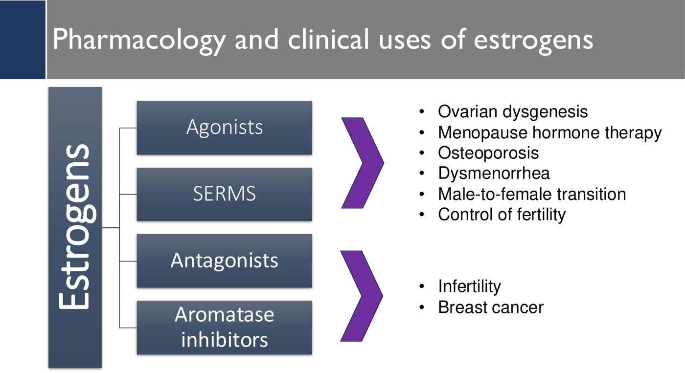
Four estrogen-directed classes: agonists, SERMs, antagonists and aromatase inhibitors.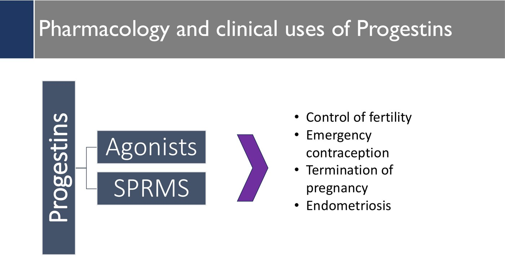
Two progesterone-directed classes: agonists (progestins) and SPRMs. Simpler than the estrogen side.Both hormones work through nuclear receptors (ERα/ERβ, PR-A/PR-B) that regulate gene transcription. Hold on to that: it's the whole explanation for how SERMs can be agonists in one tissue and antagonists in another.
Hormonal Contraceptives, Pharmacologically
How they work, what's in them, and why the side effects are exactly what the physiology predicts.
Mechanism
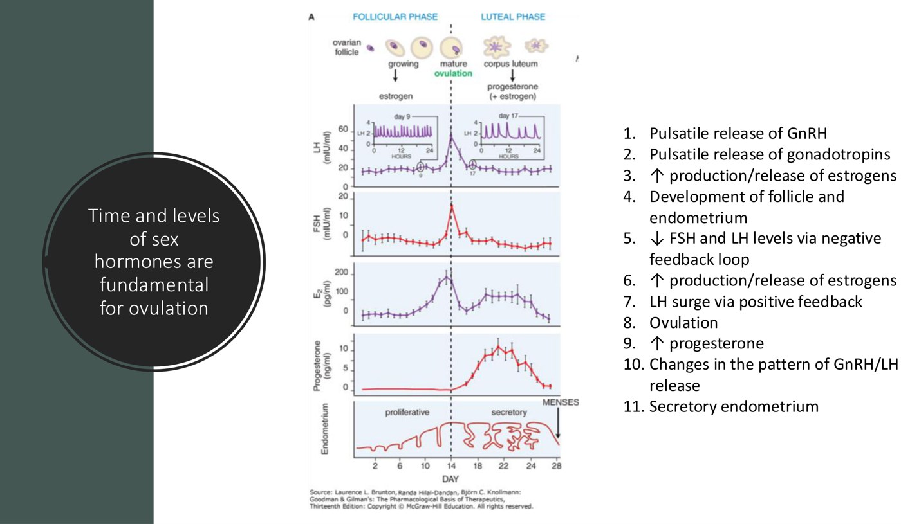
The pattern the drugs destroy. First half: frequent, small LH pulses, rising estradiol. Mid-cycle: sustained estrogen flips negative feedback to positive → LH surge → ovulation. Second half: progesterone makes LH pulses less frequent but larger.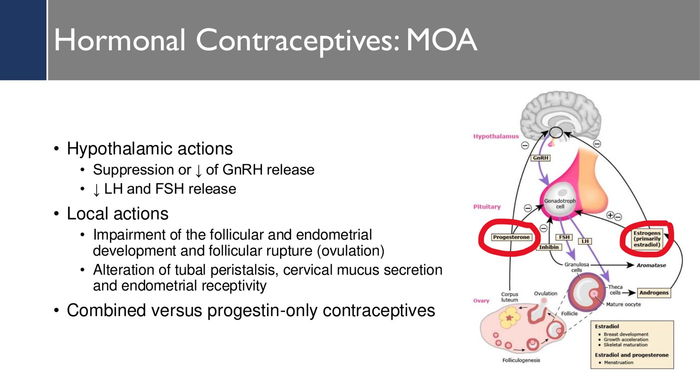
Two levels. Central: continuous supraphysiologic hormone suppresses GnRH, LH and FSH. Local: poor follicle and endometrial development, altered tubal peristalsis, and thick cervical mucus.| Combined | Progestin-only | |
|---|---|---|
| Ovulation suppressed? | Consistently | Only about 50% of cycles — except DMPA, which reliably suppresses it |
| So what makes it work? | Central suppression plus local effects | Mostly the local effects: cervical mucus, endometrium, tubal transport |
| Missed dose | More forgiving | Over 3 hours late → backup method. The local effects start reverting, and you can't know whether she ovulated |
What's Actually in Them
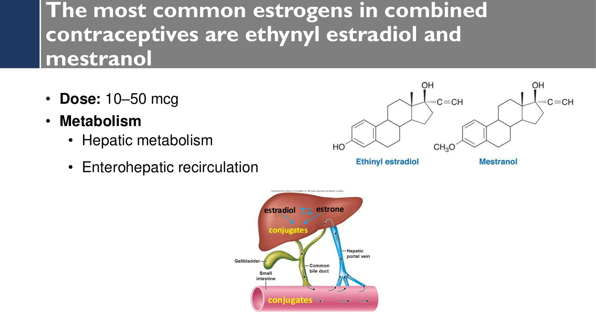
Ethinyl estradiol (mestranol is metabolized to it), 10–50 µg. Hepatic metabolism via CYP enzymes plus enterohepatic recirculation.![Slide: progestins are molecules that act as agonists of the progesterone receptor; classified by generation or structural properties into pregnanes (derived from progesterone, e.g. medroxyprogesterone acetate, nomegestrol acetate), estranes (derived from testosterone, e.g. norethindrone, norethindrone acetate, ethynodiol diacetate, norethynodrel), gonanes (derived from testosterone, e.g. levonorgestrel, desogestrel, norgestimate, gestodene) and fourth-generation progestins (derived from spironolactone, e.g. drospirenone), with chemical structures. Highlighted: progestins differ on their affinity for and actions on steroid receptors.](../../../../assets/images/week-4/gynecology-drugs/progestin-families.jpg) Four families, by what they're derived from. Pregnanes from progesterone; estranes and gonanes from testosterone; fourth-generation (drospirenone) from spironolactone.
Four families, by what they're derived from. Pregnanes from progesterone; estranes and gonanes from testosterone; fourth-generation (drospirenone) from spironolactone.
A progestin's structure decides not just how well it binds the progesterone receptor but how much it hits the other steroid receptors.
Pregnanes (progesterone-like) are the most selective progestationally. Estranes (testosterone-like) are the most androgenic → acne, oily scalp, facial hair, weight gain. Gonanes are androgenic but less so. Drospirenone is anti-androgenic (good for acne) but has mineralocorticoid activity → fluid and salt retention and a risk of hyperkalemia. All of it is dose-dependent, which is why the same progestin appears with different profiles at different doses.
So pick the progestin for the goal: acne → anti-androgenic; opposing estrogen in menopause → high progestational activity.
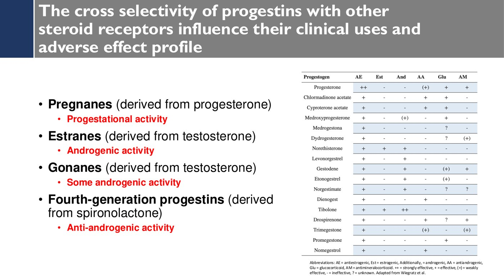
The cross-selectivity table. Some progestins also hit glucocorticoid and mineralocorticoid receptors, which is where the glucose and fluid effects come from.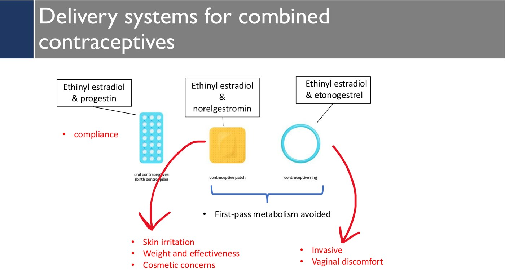
Route changes pharmacokinetics. Patch and ring bypass first-pass metabolism, so plasma levels can be higher for the same dose. Pills lose on adherence; patches irritate skin and are affected by weight; rings are invasive and can cause discharge or dryness.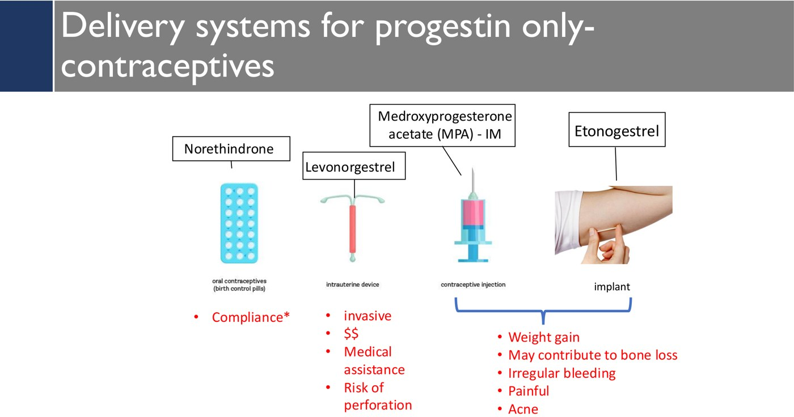
Side Effects, Predicted From Physiology
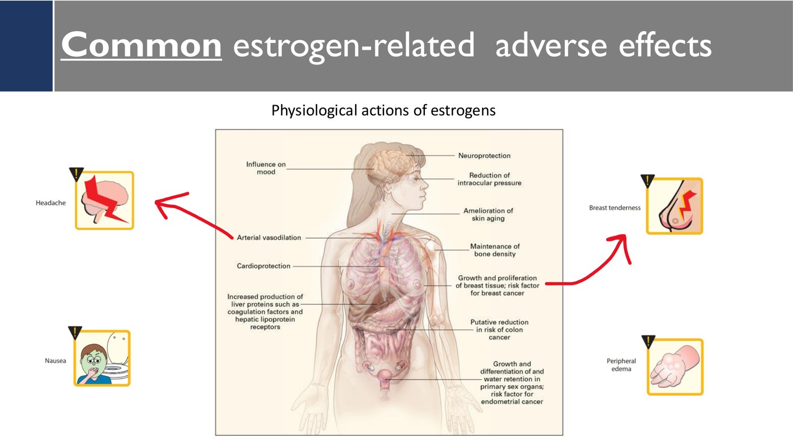
Estrogen side effects are its physiology, unwanted. Breast proliferation → tenderness. Vasodilation → headache. RAAS effects → fluid retention and edema. Plus nausea and bloating.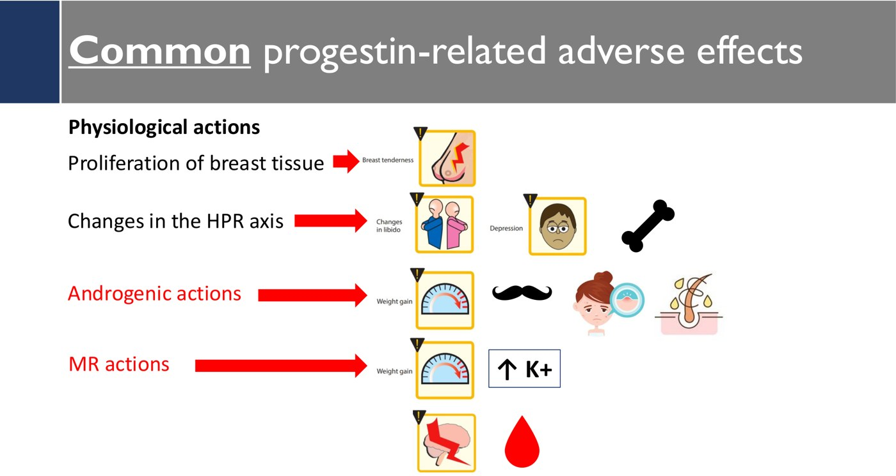
Progestin side effects follow the receptor it hits. HPO suppression → less endogenous estrogen → low libido, low mood, bone loss. Androgenic → acne, facial hair, oily scalp, weight gain. Mineralocorticoid → fluid retention, hyperkalemia. Plus breakthrough bleeding, commoner with progestin-only.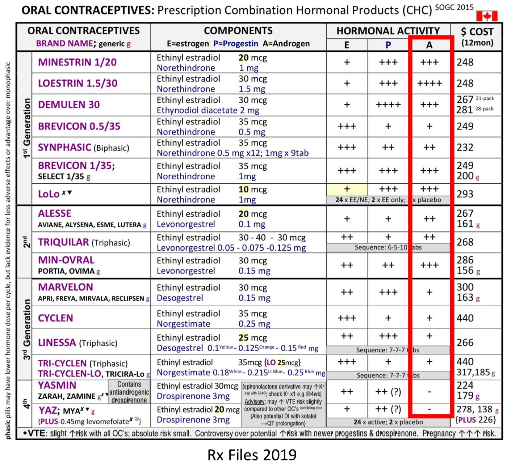
The Serious Risks
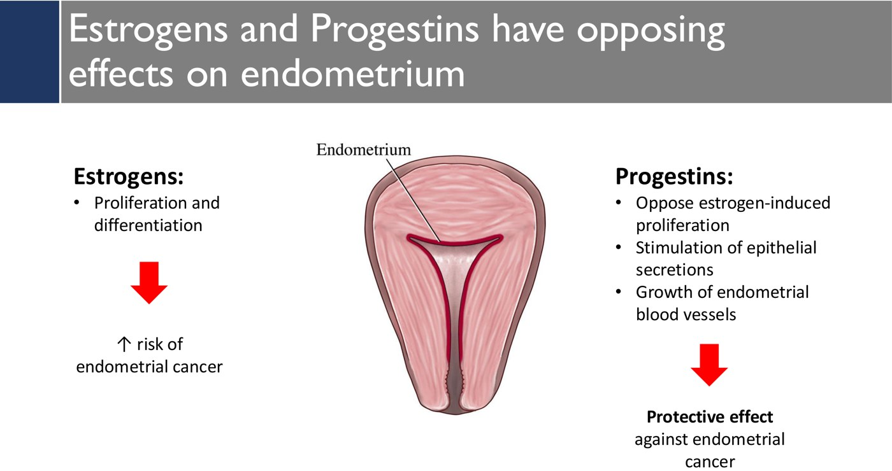
In the endometrium they oppose each other. Estrogen alone → proliferation → endometrial cancer risk; the progestin protects. This is why estrogen-only preparations are never used as contraceptives.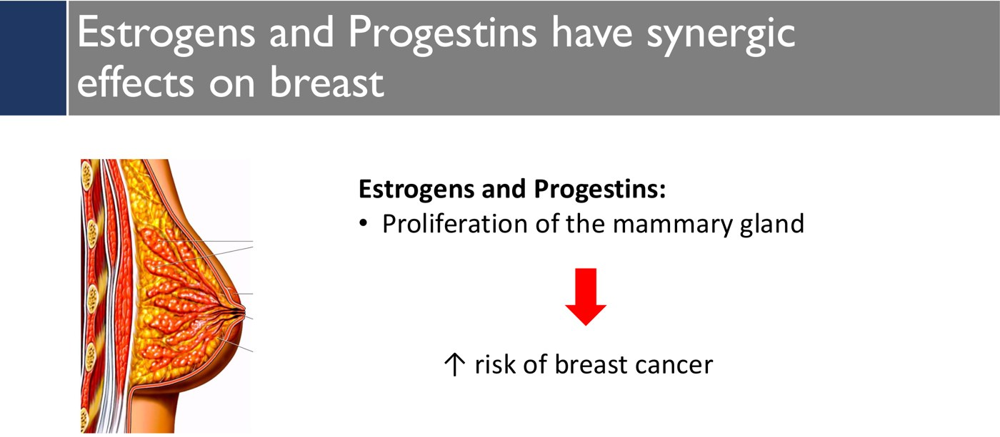
In breast they act together, both driving proliferation → increased breast cancer risk, for combined and progestin-only preparations.Net effect across cancers: combined contraceptives are associated with a decreased risk of ovarian, endometrial and colorectal cancer.
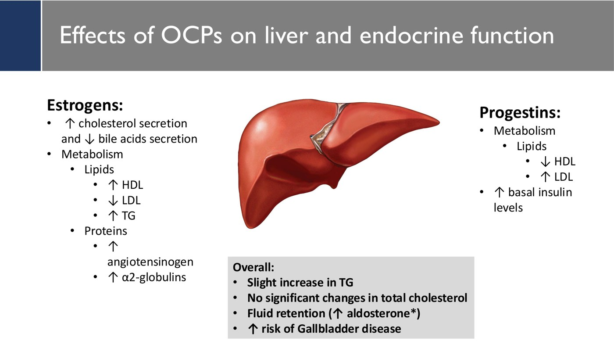
Liver and metabolism. The two hormones pull lipids in opposite directions, so the net is a slight rise in triglycerides. Estrogen's effect on bile means gallstones, making gallbladder disease a relative contraindication.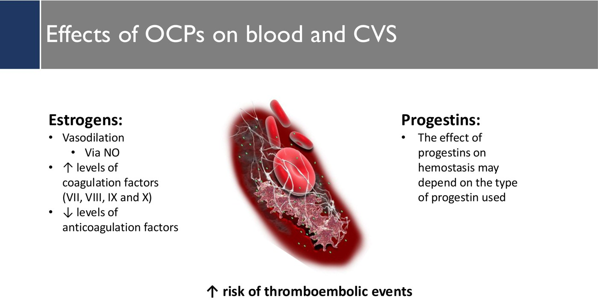
Why VTE. Estrogen raises factors VII, VIII, IX and X and lowers anticoagulant factors. The progestin type modifies it: anti-androgenic progestins (drospirenone, cyproterone) carry a higher reported thrombosis risk.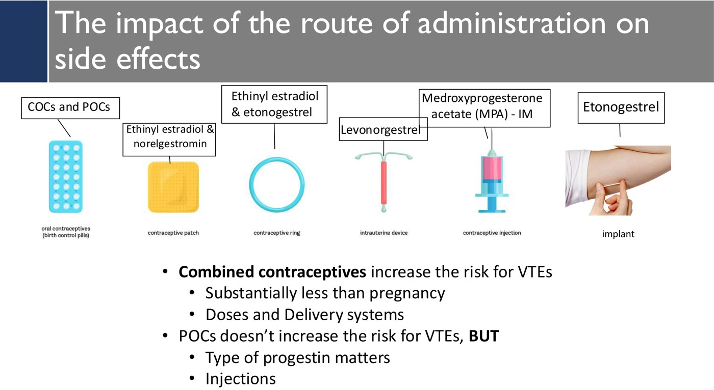
The honest summary. Combined > progestin-only > no method for VTE risk, and substantially less than pregnancy. Whether patch or ring is worse than pills is inconclusive. Progestin-only is safe, with the injection as the exception.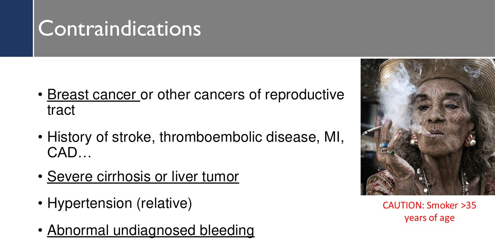
Contraindications, with the relative ones underlined on the slide. Hypertension is relative; undiagnosed abnormal bleeding must be worked up first. Many of these still allow a progestin-only method, since the problem is usually the estrogen — including for smokers over 35.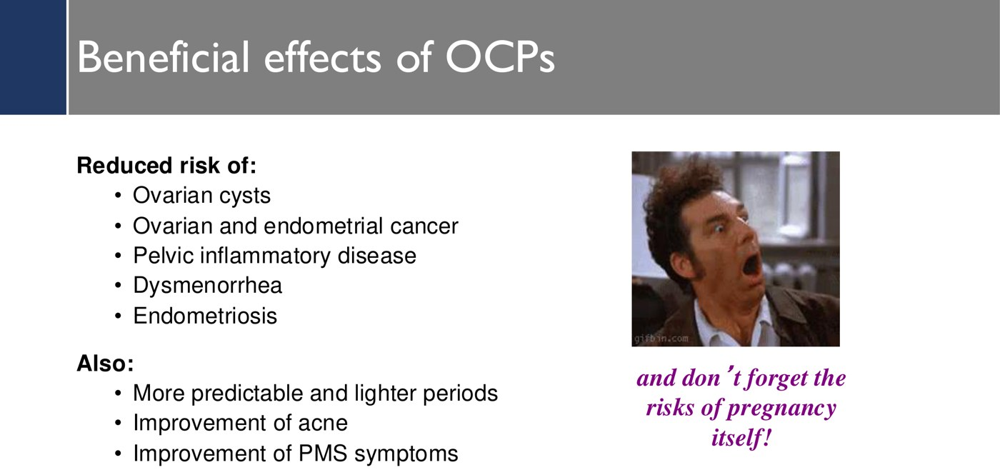
Drug interactions to remember: smoking alters estrogen clearance through CYP enzymes, and carbamazepine, rifampin and aprepitant can lower estrogen levels enough to matter. Common antibiotics do not.
SERMs & SPRMs
The same molecule acting as agonist, partial agonist or antagonist depending on which tissue it lands in.
How Tissue Selectivity Works
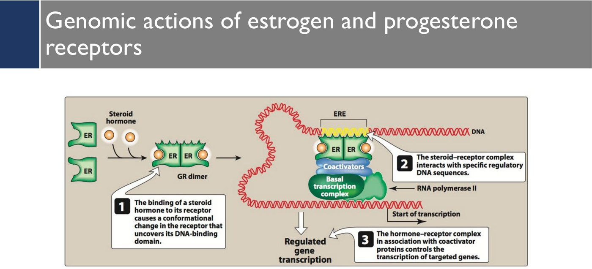
The mechanism. Hormone binds → receptor changes shape → dimer binds a response element → co-activators or co-repressors are recruited → transcription changes.![Slide titled Proposed tissue-specific actions of SERMs showing bone cells expressing cofactors X and Y and breast cells expressing only cofactor Y, with a SERM that recruits only cofactor X acting as a partial agonist in bone and an antagonist in breast. Text: the actions mediated by estrogen receptors are highly dependent on the selectivity of the ligand for the different estrogen receptors, the conformational changes promoted by each ligand, and the tissue-specific expression of co-activators and co-repressors.](../../../../assets/images/week-4/gynecology-drugs/serm-tissue-specificity.jpg) The worked example. Bone expresses co-factors X and Y; breast only Y. A SERM that recruits only X is a partial agonist in bone and an antagonist in breast (it binds, recruits nothing, and blocks estrogen). Same drug, opposite effect.
The worked example. Bone expresses co-factors X and Y; breast only Y. A SERM that recruits only X is a partial agonist in bone and an antagonist in breast (it binds, recruits nothing, and blocks estrogen). Same drug, opposite effect.
Three things decide the outcome: which receptor isoform the ligand prefers, what shape it forces the receptor into, and which co-factors that tissue happens to express.
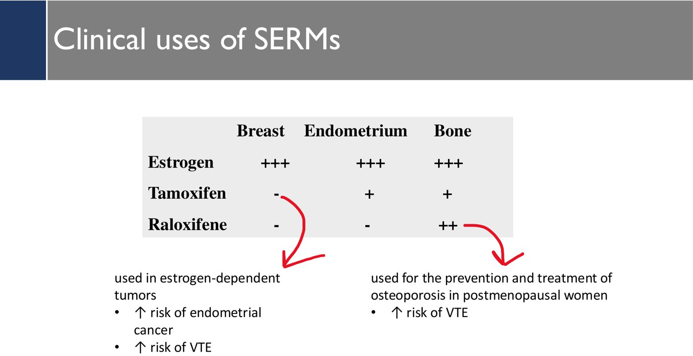
The table to know. Both are antagonists in breast (so both treat estrogen-dependent breast cancer) and agonists in bone (so both help osteoporosis). The difference is the endometrium: tamoxifen is a partial agonist there → endometrial cancer risk; raloxifene is an antagonist → no such risk. Both still raise VTE risk.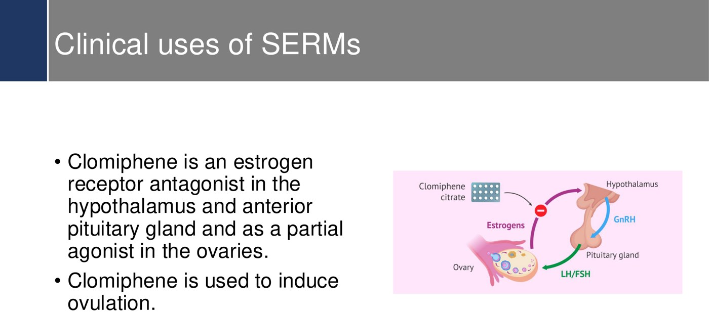
Clomiphene: blocking a brake. It antagonizes estrogen receptors in the hypothalamus and pituitary, removing estrogen's negative feedback, so GnRH, LH and FSH rise and a follicle develops. You induce ovulation by inhibiting an inhibition.Pure antagonists exist too: fulvestrant binds, blocks and degrades the estrogen receptor, shutting signalling down completely; it's used in advanced breast cancer, including tumours resistant to tamoxifen. Aromatase inhibitors take a different route: less androgen→estrogen conversion means less estrogen to begin with.
SPRMs: From Fibroids to Emergency Contraception
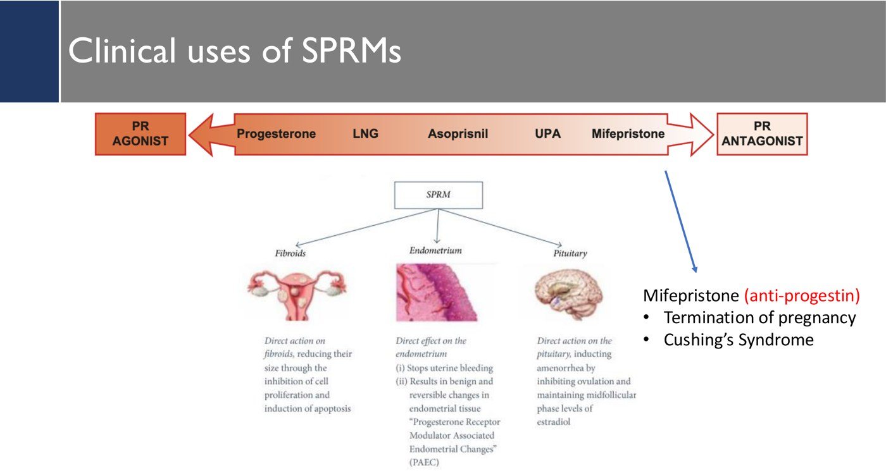
A spectrum, not a switch. From progesterone and levonorgestrel (agonist) through ulipristal to mifepristone (mostly antagonist). Anti-proliferative effects on the endometrium make them useful for fibroids, endometriosis and abnormal bleeding.| Drug | What it does |
|---|---|
| Mifepristone | Mostly anti-progestin and anti-glucocorticoid. Blocking endometrial PR lowers hCG support and detaches the pregnancy → termination (see 4.1). The anti-glucocorticoid action makes it useful in Cushing syndrome |
| Ulipristal acetate | A partial agonist used for emergency contraception and fibroids |
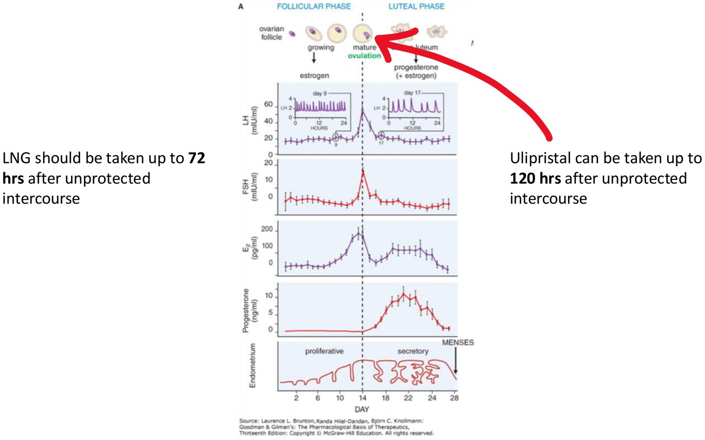
Why the windows differ. Levonorgestrel only delays ovulation, so it fails once the LH surge starts (≤ 72 h). Ulipristal also directly inhibits follicular rupture and thins the endometrium, so it still works during the LH rise — up to 120 h.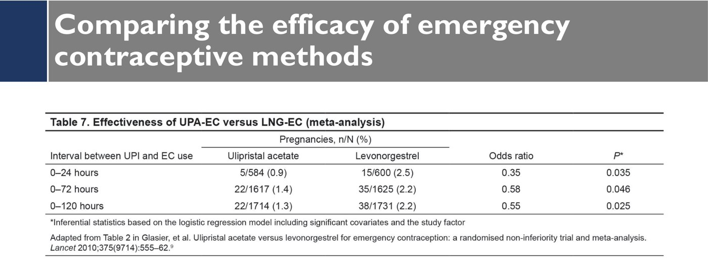
The head-to-head. Ulipristal beats levonorgestrel at every interval, and the gap matters most in the later windows. Glasier et al., Lancet 2010.Neither is an abortifacient. Once a pregnancy is established, they don't work. The clinical side of emergency contraception, including the copper IUD, is in 4.3.
Androgens & the Drugs for Periods
The other half of the module: androgen agonists and antagonists, NSAIDs and tranexamic acid.
Androgens
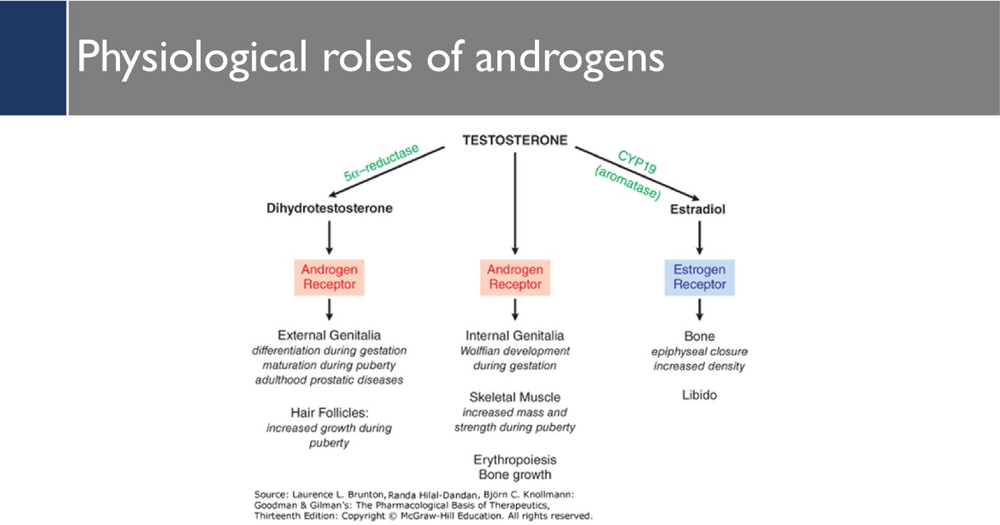
One hormone, three fates. 5α-reductase → DHT for external genitalia and hair follicles; testosterone itself for Wolffian structures, muscle and erythropoiesis; aromatase → estradiol for bone and libido. Compare with 3.9.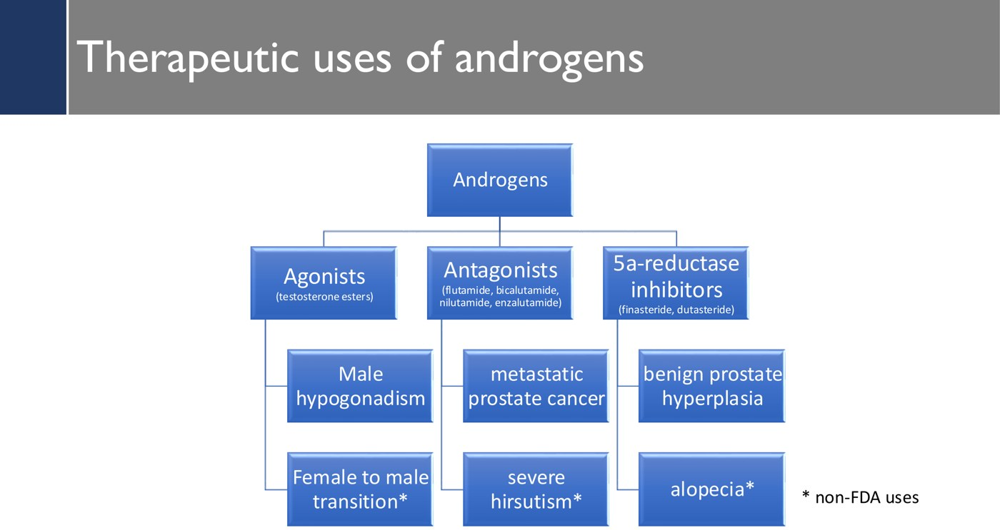
Three classes. Agonists for hypogonadism and female-to-male transition. Receptor antagonists (flutamide) for metastatic prostate cancer and severe hirsutism. 5α-reductase inhibitors (finasteride) for BPH and alopecia. Side effects of antagonists: lower libido, erectile dysfunction.Aromatase inhibitors appear here too, treating breast cancer, endometriosis and gynecomastia — and, as seen in 4.2, inducing ovulation (letrozole).
NSAIDs and Tranexamic Acid
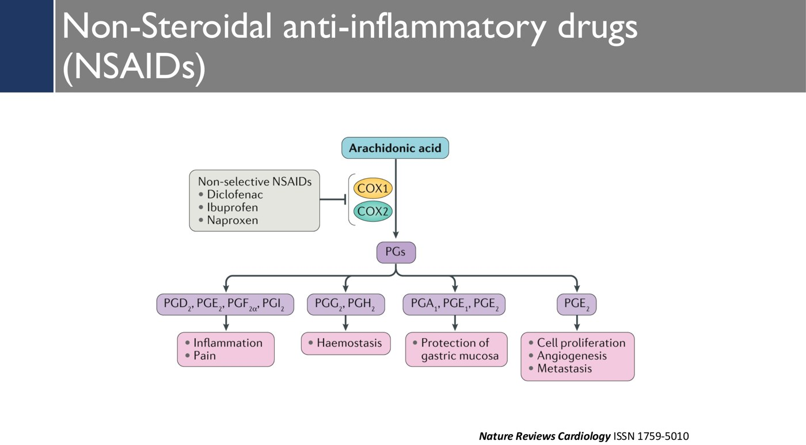
Dysmenorrhea is a prostaglandin problem. Endometrial prostaglandins drive the painful contractions, so blocking COX-1 and COX-2 relieves the pain — and, by causing vasoconstriction, also reduces bleeding.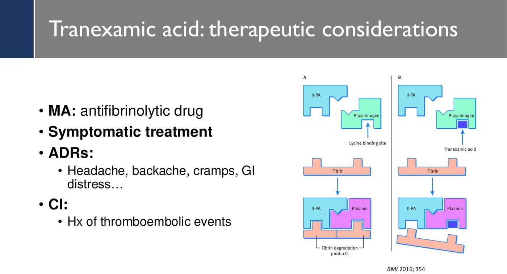
Tranexamic acid is a lysine analogue that blocks plasminogen's fibrin-binding site, so clots aren't dissolved. It doesn't stop clots forming — which is exactly why a history of thrombosis is a contraindication.| NSAIDs | Tranexamic acid | |
|---|---|---|
| Does | Inhibit COX → fewer prostaglandins → less pain and less bleeding. Most women get moderate to excellent pain relief | Antifibrinolytic: prevents clot breakdown, so more effective than NSAIDs at reducing blood loss |
| Side effects | GI upset (prostaglandins protect gastric mucosa), renal damage (they maintain renal perfusion) | Headache in up to 60%, backache, cramps, GI distress |
| Avoid if | Renal failure, gastritis or peptic ulcer, coagulation disorders (COX makes thromboxane, a platelet aggregator) | History of thromboembolic events |
| Note | Both are symptomatic: they treat the bleeding and pain, not the underlying cause. Tranexamic acid is usually taken for a few days, or only on heavy days | |
The Whole Module on One Slide
![Summary map of drugs used in gynecology: estrogens (agonists such as ethinyl estradiol for contraceptives and replacement therapy; antagonists; SERMs including raloxifene for osteoporosis, tamoxifen for treatment of breast cancer, and clomiphene for treatment of infertility; aromatase inhibitors); progestins (agonists including mifepristone for termination of pregnancy, and ulipristal for emergency contraception, endometriosis and fibroids; SPRMs); androgens (agonists for male hypogonadism, antagonists for prostate cancer).](../../../../assets/images/week-4/gynecology-drugs/summary-map.jpg)
| Core concept | The point |
|---|---|
| Contraceptive components | Ethinyl estradiol plus one of many progestins. Effects and side effects depend on dose and progestin type |
| Delivery systems | Combined: pill, patch, ring. Progestin-only: mini-pill, injection, IUS, implant |
| Adverse effects | Shared: nausea, bloating, breast tenderness, headache. Hormone-specific: VTE with estrogen, breakthrough bleeding with progestin, weight gain proven only for DMPA and the implant |
| Modulators | Tissue-specific because of receptor isoforms and co-factors; can be agonist, partial agonist or antagonist in different tissues |
| Ulipristal | An SPRM that delays ovulation and inhibits follicular rupture, so it works later than levonorgestrel — but not once pregnancy is established |
| Androgens | FDA uses: replacement (testosterone esters), BPH (finasteride), prostate cancer (flutamide). Non-FDA: hirsutism, alopecia. ADRs: reduced libido, erectile dysfunction |
Built from Dr. Fabiana Caetano Crowley's "Drugs Used in Gynecology" slide deck and the module's twelve recorded videos (pharmacological targets, estrogen and progesterone physiology, contraceptives, side effects, adverse effects, SERMs, SPRMs, androgens, other drugs, and the summary). All figures are slides from the deck, which cites RxFiles, Katzung, Nature Reviews Cardiology and Glasier et al. (Lancet 2010). The module's assigned HRT review (Lobo, Nat Rev Endocrinol 2017) is a journal article rather than a slide set, so it is cited here rather than reproduced. Auto-caption garbling was heavy in these recordings (for example "vitis" for VTE, "insets" for NSAIDs, "sperms" for SPRMs); the slides were followed wherever the two disagreed. The clinical counterpart to this page is 4.3 Contraception.